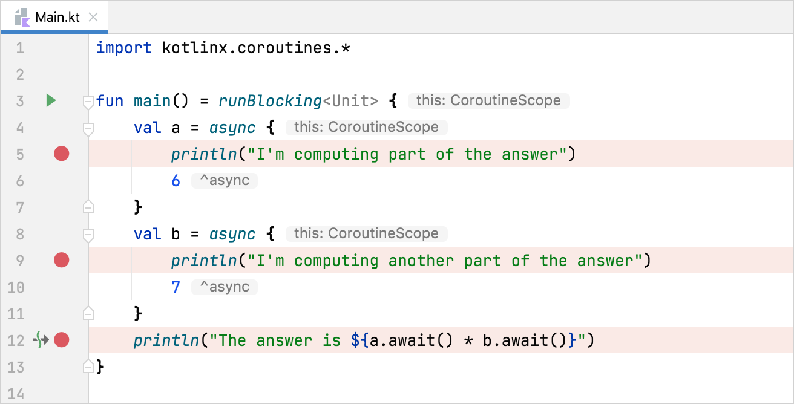
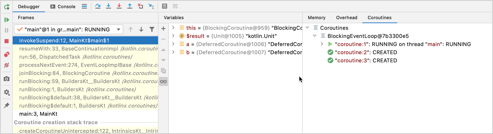
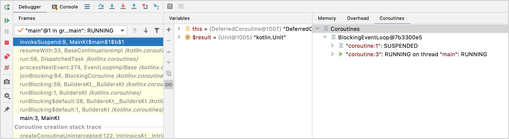

This tutorial demonstrates how to create Kotlin coroutines and debug them using IntelliJ IDEA.
The tutorial assumes you have prior knowledge of the coroutines concept.
Create coroutines
Open a Kotlin project in IntelliJ IDEA. If you don't have a project, create one.
-
To use the
kotlinx.coroutineslibrary in a Gradle project, add the following dependency tobuild.gradle(.kts):Kotlin
dependencies { implementation("org.jetbrains.kotlinx:kotlinx-coroutines-core:1.11.0") }Groovy
dependencies { implementation 'org.jetbrains.kotlinx:kotlinx-coroutines-core:1.11.0' }For other build systems, see instructions in the
kotlinx.coroutinesREADME. -
Open the
Main.ktfile insrc/main/kotlin.The
srcdirectory contains Kotlin source files and resources. TheMain.ktfile contains sample code that will printHello World!. -
Change code in the
main()function:Use the
runBlocking()block to wrap a coroutine.Use the
async()function to create coroutines that compute deferred valuesaandb.Use the
await()function to await the computation result.Use the
println()function to print computing status and the result of multiplication to the output.
import kotlinx.coroutines.* fun main() = runBlocking<Unit> { val a = async { println("I'm computing part of the answer") 6 } val b = async { println("I'm computing another part of the answer") 7 } println("The answer is ${a.await() * b.await()}") } -
Build the code by clicking Build Project.

Debug coroutines
-
Set breakpoints at the lines with the
println()function call:
-
Run the code in debug mode by clicking Debug next to the run configuration at the top of the screen.

The Debug tool window appears:
The Frames tab contains the call stack.
The Variables tab contains variables in the current context.
The Coroutines tab contains information on running or suspended coroutines. It shows that there are three coroutines. The first one has the RUNNING status, and the other two have the CREATED status.

-
Resume the debugger session by clicking Resume Program in the Debug tool window:

Now the Coroutines tab shows the following:
The first coroutine has the SUSPENDED status – it is waiting for the values so it can multiply them.
The second coroutine is calculating the
avalue – it has the RUNNING status.The third coroutine has the CREATED status and isn’t calculating the value of
b.
-
Resume the debugger session by clicking Resume Program in the Debug tool window:

Now the Coroutines tab shows the following:
The first coroutine has the SUSPENDED status – it is waiting for the values so it can multiply them.
The second coroutine has computed its value and disappeared.
The third coroutine is calculating the value of
b– it has the RUNNING status.
Using IntelliJ IDEA debugger, you can dig deeper into each coroutine to debug your code.
Optimized-out variables
If you use suspend functions, in the debugger, you might see the "was optimized out" text next to a variable's name:

This text means that the variable's lifetime was decreased, and the variable doesn't exist anymore. It is difficult to debug code with optimized variables because you don't see their values. You can disable this behavior with the -Xdebug compiler option.